The fewest steps that get your change to done. You see every step it leaves out, and you can tick any of them back in.
This page follows one bug fix through intake. Every screenshot is from a real session: Claude Code 2.1.269 running HITL 2.13.0 on a small demo store called Shopfront. The only edit is the folder path, shortened to ~/shopfront.
Rules read what the change touches. A step drops out only when the change gives it nothing to protect.
Every step it leaves out is listed, and comes back as a checkbox with what it protects.
Every left-out step is recorded with who decided and why. Production steps need a named person.
The bug (issue #42). A customer who clears the discount box and presses Pay gets a 500: apply_discount(total, "") raises KeyError. Done means a blank code leaves the total unchanged.
With no change active, the status line says what to do.
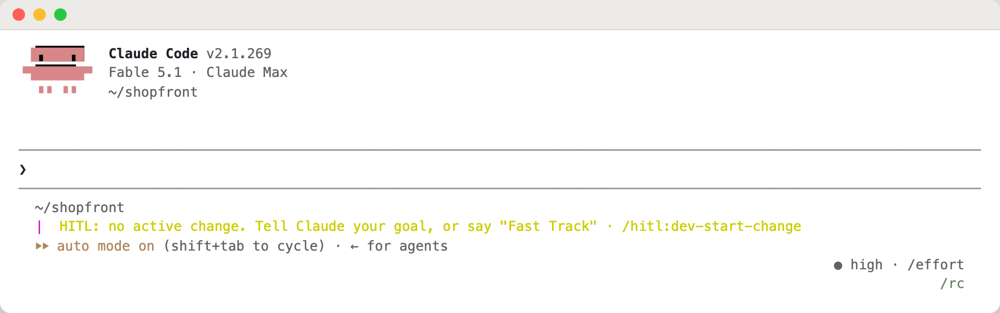
Give the goal in one sentence and what done looks like. Saying “Fast Track” is optional: intake offers it either way.
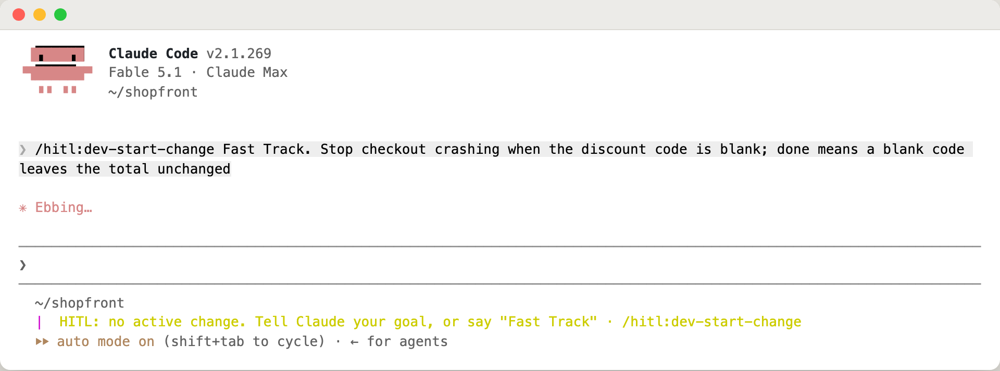
Before planning anything, Claude ran the code and confirmed the crash: a blank code raises KeyError and None raises AttributeError. Then it asks you to confirm its restatement, and settles the one open question: what an unknown code should do.
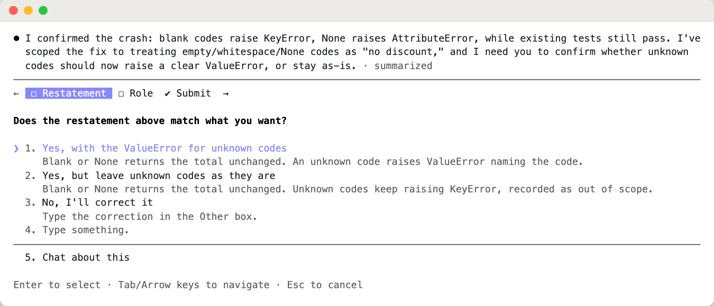
The impact analysis reads the manifest, the design doc and the code, and looks for callers. Here it found one area, no dependents and no data change. The one thing it can’t read from code is whether the change touches security, so it asks.
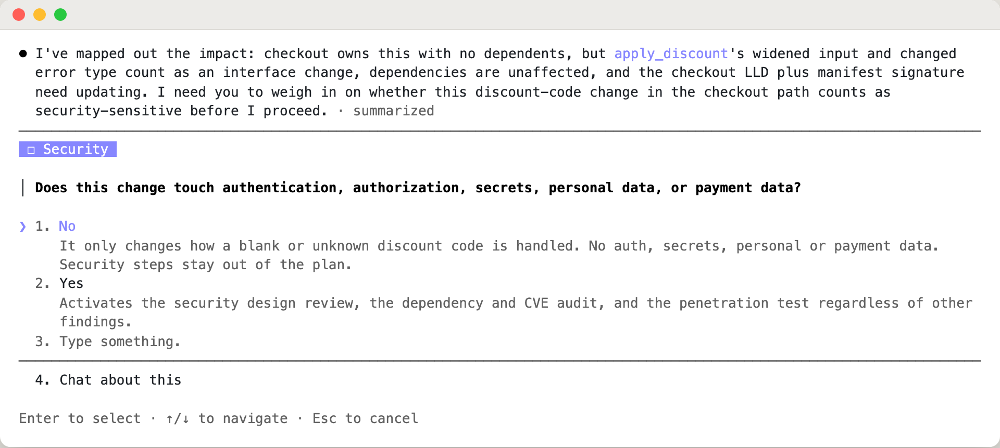
Claude proposes Tier 1 and names the finding behind it. It also tells you the judgement it made that you might not share: it did not count accepting None as an interface change. If you disagree, three steps come back into the plan. Each tier option shows what it would do to the Fast Track step count.
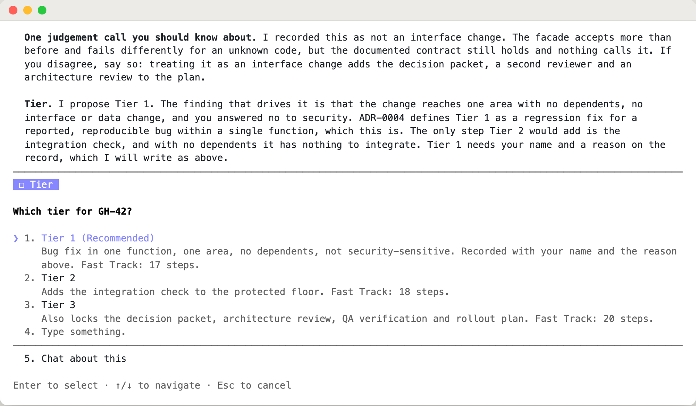
Two sizes of the same plan. The preview lists every step in Fast Track and everything it leaves out; move down to Full Scale to see the other list. For this fix, Fast Track is 17 steps and Full Scale is 27.
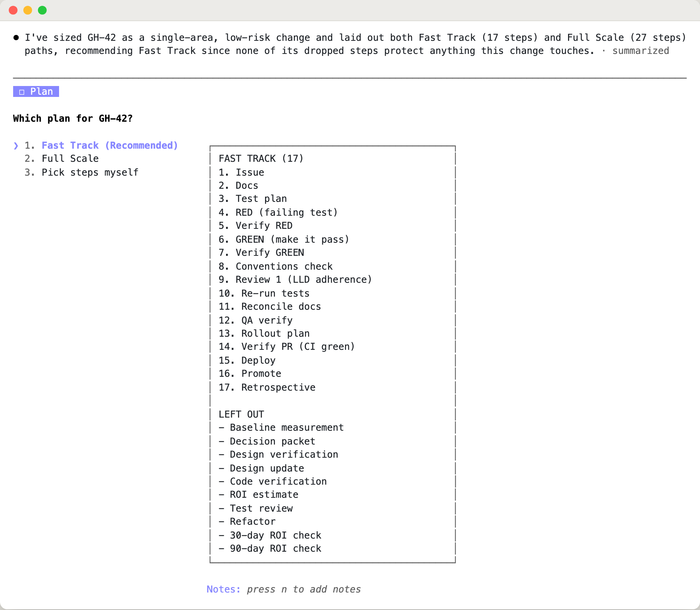
Everything Fast Track left out comes back as checkboxes, most consequential first. Each one says what the step protects and what leaving it out costs. You don’t have to ask for them.
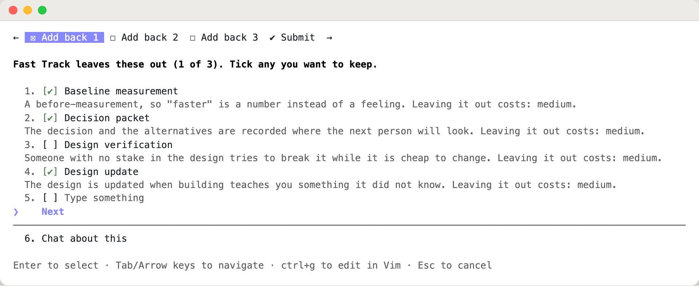
In this run the developer kept five: baseline, decision packet, design update, code verification and test review. Before submitting, you see every choice in one place.
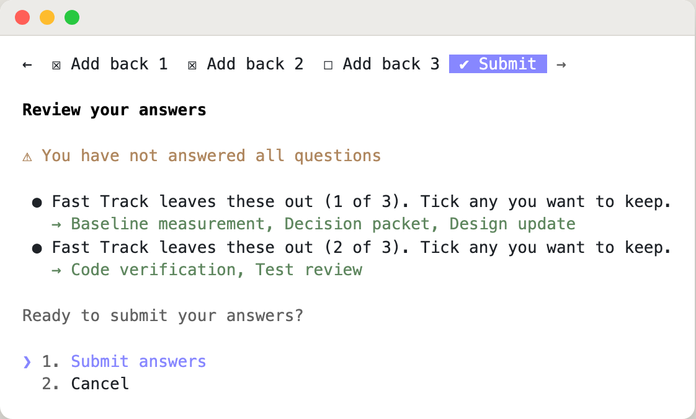
Want it lighter still? Pick “Pick steps myself” at the plan question and a second screen follows: the steps in the plan you could leave out, cheapest to drop first. The steps that always stay are not on it. A step you tick gets a lighter form: a thin starter, a deferral with a follow-up issue, or a decline. This screenshot is from a second run of the same fix, where Conventions check was deferred to a follow-up issue.
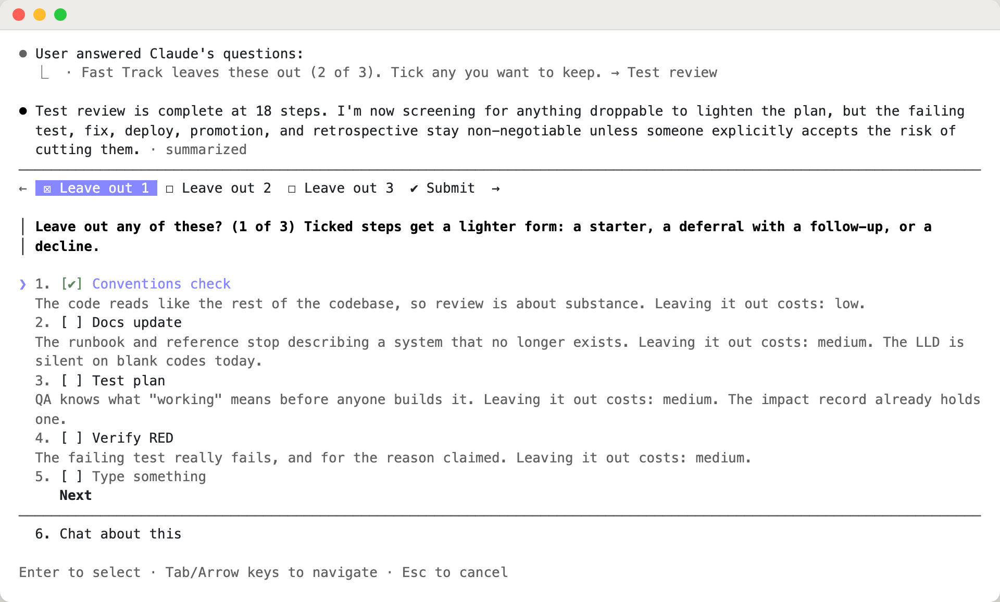
The plan, the tier and every left-out step go into .hitl/current-change.yaml, each with who decided and why. The breadcrumb shows a left-out step as ⊘, so it is visibly skipped rather than gone. Claude also points out the one kept step that has little to do on a crash fix.
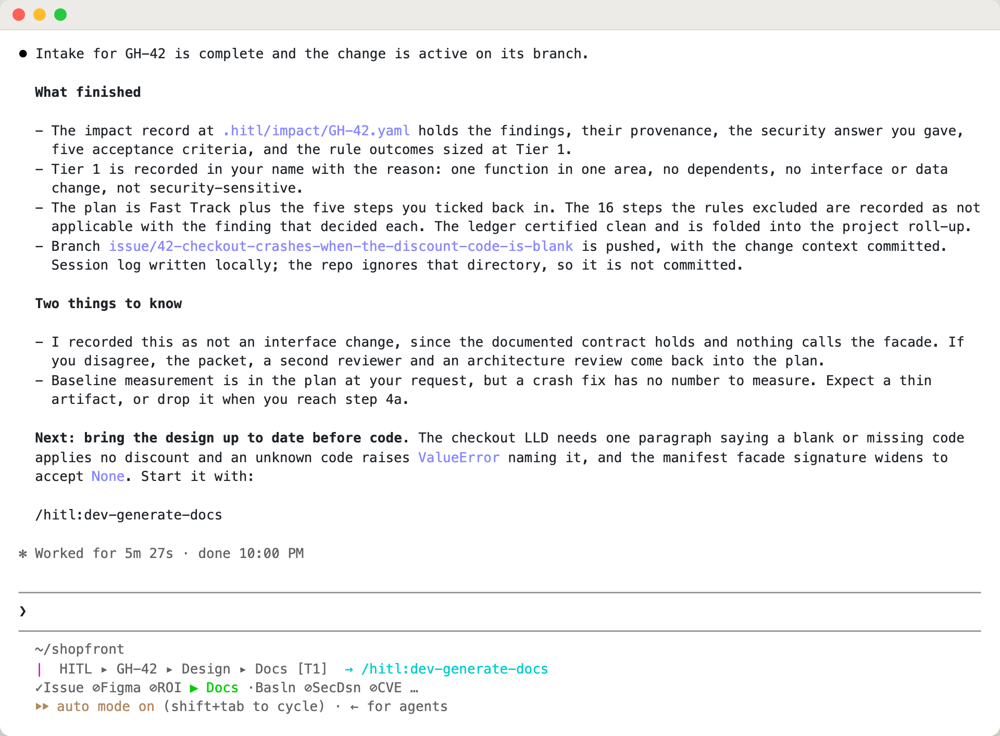
After the design doc step, the breadcrumb moves on and names the next command.
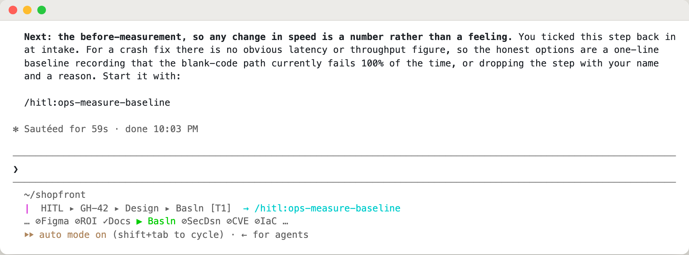
| Step | Rule |
|---|---|
| Write the failing test, make it pass | Always stay. They can be made thin (one test), never dropped |
| Deploy, promote, the retrospective | Dropped only if a named person accepts the risk |
| Integration check (tier 2 and up); decision packet, architecture review, QA check and rollout plan (tier 3) | Same: a named person accepts the risk |
| Penetration test (any tier), security design review and dependency audit (tier 3), when the change touches security or dependencies | Same: a named person accepts the risk |
/hitl:dev-start-change
Run it and say your goal. The getting-started guide covers the rest of the workflow.